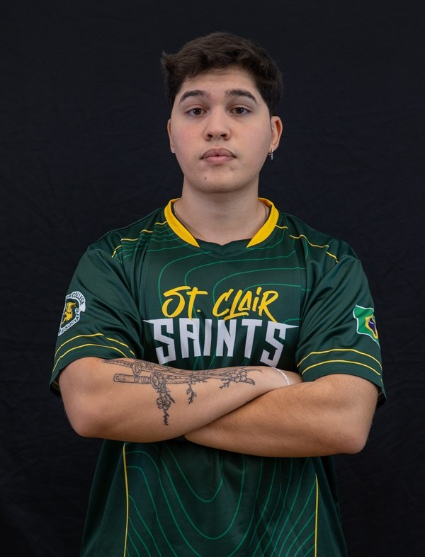
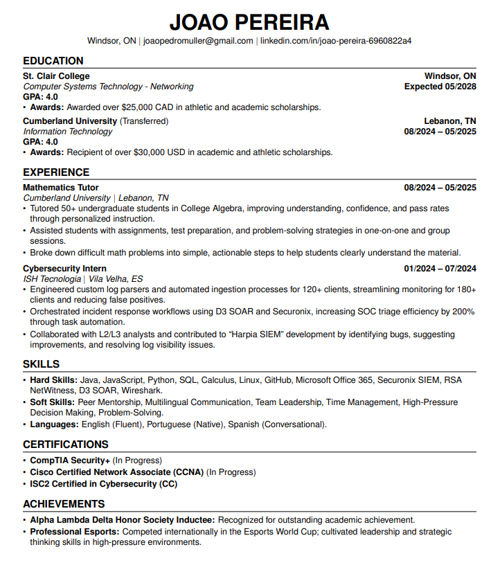

I am a Computer Systems Technology - Networking student at St. Clair College with a strong foundation in computer science and cybersecurity. Before my current studies, I spent two years in Computer Science at a top Brazilian university and interned at ISH Tecnologia, the largest cybersecurity company in Brazil. There, I supported SIEM and SOAR systems within the Professional Services team, gaining hands-on experience in real-world security operations.
I am passionate about cybersecurity and constantly work to expand my skills through certifications, courses, and continuous learning. My current focus is advancing my knowledge in networking and security technologies to prepare for industry-recognized certifications.
My goal is to build a career as a cybersecurity professional, combining my international academic background with practical experience to contribute to innovative and secure IT solutions.

Download Resume (PDF)Inducted for outstanding academic achievement and maintaining a high GPA during my first year of college in the United States.
Competed internationally in the Esports World Cup. Developed leadership and strategic thinking skills in high-pressure competitive environments.
Earned Academic Distinction for the Computer Systems Technology - Networking program during Fall 2025, recognized by St. Clair College for outstanding academic performance.